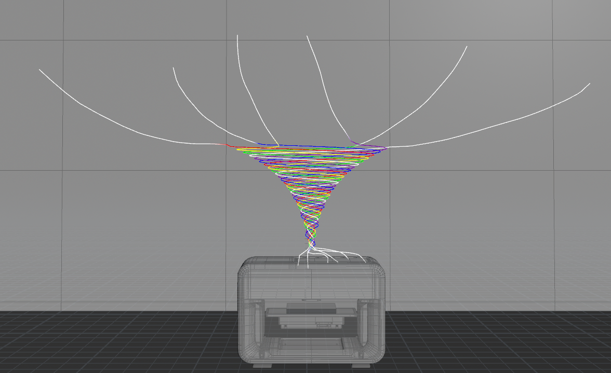
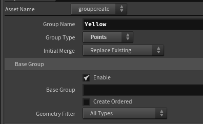
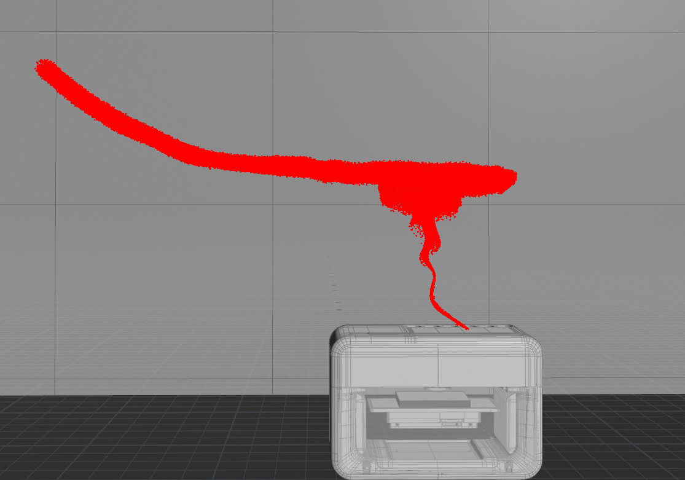

第 2 周
团队成员
Yiqi Zheng（特效）
Riley Ho（特效）
Itim Kongsakulvatanasook（特效）
Sofia Mancias（合成）
1 月 14 日
Benji Hopkins（外观开发）
SCAD × HARBOR × ETC － 第 2 周
大家好，这是我 SCAD × Harbor × ETC 部落格的第二周！
以下是周二提案后导师们的回馈。
Kyle：
-
注意摄影机运动，避免太过忙乱。
-
放慢节奏，尤其不要快速掠过特效细节。
-
第二个镜头让人头晕，减少摄影机移动。
-
摄影机运动减少约 15%，让观众有时间看清特效。
-
每个镜头都要突显特定的产品细节（例如印表机内部，而不只是顶面）。
-
产品要非常精准，注意细节（例如有 LED 灯就要做出来）。
-
确保灯光能让绘画感的色彩在黑色背景上清楚呈现。
Hailey：
-
确保色彩在黑色环境中够突出。
-
色彩与灯光需要强烈的视觉对比。电视广告的参考很有力也很合适。
Beck：
-
展现产品能做什么，而不只是产品本身。
-
整体节奏太快，放慢一点来展示特效与细节。
Molly：
-
摄影机运动要更有编排、更有意图。
-
很多镜头结束时产品位置都很像，要多一些变化。
-
镜头 2 可以更微距、更特写。
Stephan：
-
特效可以当作光源（自发光特效）。
Billy：
-
决定是摄影机动还是物体动，避免两者同时进行。
-
先清楚定义产品的视觉语言。视觉语言确定后，就会知道该强调摄影机运动还是产品细节。
待办事项：
-
建立流体的流动路径
-
确保曲线能引导流体形成平滑的流动
-
调整位置与速度以符合分镜（流体逐一流进孔洞）
流体测试：
依照分镜，我先做流体测试。基本动作是六道彩色流体从画面外进来，旋绕在一起，再逐一流进孔洞。
参考资料：
我没找到动作完全一样的参考，但找到了流体流进孔洞时应有的样子。


我先建立曲线作为流体路径的引导线，并依颜色分组。
建立一个球体作为流体的发射器，再用 popnet 产生粒子，之后可以转换成流体。


这段 VEX 程式从邻近的曲线点取样切线方向，用来驱动粒子速度，让流体能平滑地沿著曲线流动，同时以参数控制维持一致的速度。
我也做了顶层控制项，用来管理整体流速，并让各色流体依序流进各自的孔洞。

这些是两条流体路径的 flipbook。

我也设定了不同的发射器群组，让每种颜色沿著对应的路径流动。还需要研究为什么流体接近孔洞时会变细。
问题：

我还需要找出流体越接近孔洞越细的原因。
下一步，我打算结合 Vellum solver，让流体更黏稠、更像颜料，并进一步打磨运动路径。
-
调整流体路径
-
整合 Vellum，做出黏稠、像颜料的流体效果